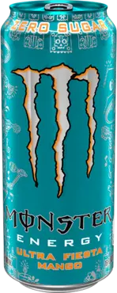
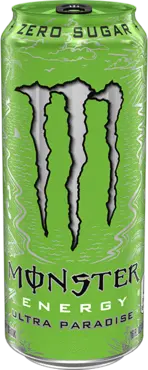
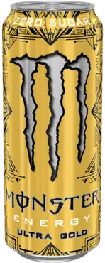
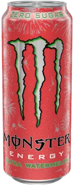

visszaUltra White
Van,akinek nem lehet a kedvében járni. Amint megkapják amit kívántak, máris mégtöbbet akarnak. Sportolóink és a Monster lányok is ilyenek...az utóbbi időben tettek pár megjegyzést. Egy új Monster italt kértek tőlünk, amely kevésbé édes, könnyedebb izű zéró kalóriával, mégis ugyanúgy felpörget, mint a többi monster ital. Igen, a fehér az új fekete. Megérkezett a Monster Energy Ultra

visszaUltra Mangó
Aludni ráérsz később is, Mert ma este úgy fogunk ünnepelni, mintha nem lenne holnap Az Ultra Fiesta a soha Véget nem érő éjszakákat és a szinte már családtagnak tekintett barátokat ünnepli. A cukormentes Ultra Fiesta kellemes mango izzel tölti meg a már általunk kedvelt Ultra Családot, mindezt maxra töltve a Monster Energy keverékünkkell
visszaUltra Paradise
Hol van az igazi földi paradicsom? A hegyoldalban egy házikóban, vagy egy patak menti birtokon esetleg egy városi penthouseban? Mit szólnál egy fehér homokos privát szigethez türkizkék vizzel és lágy trópusi szellővel? Master Ultra Paradise, könnyed és friss, egy trópusi sziget pezsdítő ízeivel. Dőlj hátra és élvezd! hogy hol van a földi paradicsom az csak rajtad múlik
visszaUltra Ananász
Az ókori görög legenda szerint az ambrózia és nektár halhatatlanságot adott mindenkinek aki fogyasztotta, sajnos az istenek gyümölcse csak mítosz, de minket arra ösztönözött, hogy létrehozzuk az ULTRA GOLDEN PINEAPPLE-T az egyszerű halandók számára. A cukormentes, könnyed Ultra Menyei friss íze olyan, mintha egy tökéletesen érett, arany ananászba harapnál Bár nem igérhetünk halhatatlanságot, a Monster Energy Ultra Golden Pineapple felkészít a kihívásokra, amiket eléd sodor az élet Zsebeld be az aranyat, bármiről is legyen szó.
visszaUltra Watermelon
Tűzijátékkal teli ég alatt melletted a kedvesed Jó Zene és barátok, más nem is kell a nyár legjobb éjszakájához. Ultra Watermelon a dobozba zárt nyár, amit előkaphatsz bármerre is járnál Zéró cukor, könnyed frissító iz, és a kirobbanó Monster mix... Ez tutira felvillanyozza forró nyári estéket!
